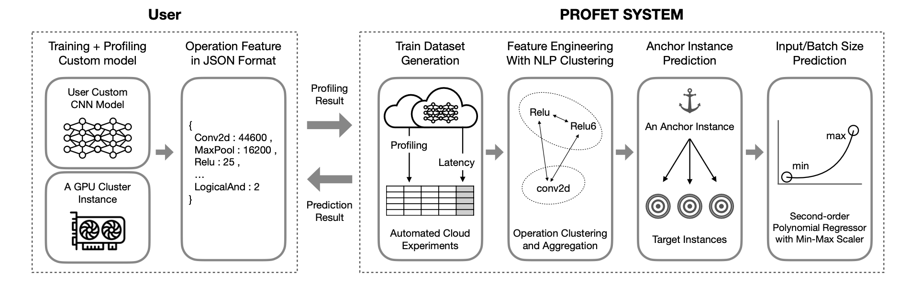
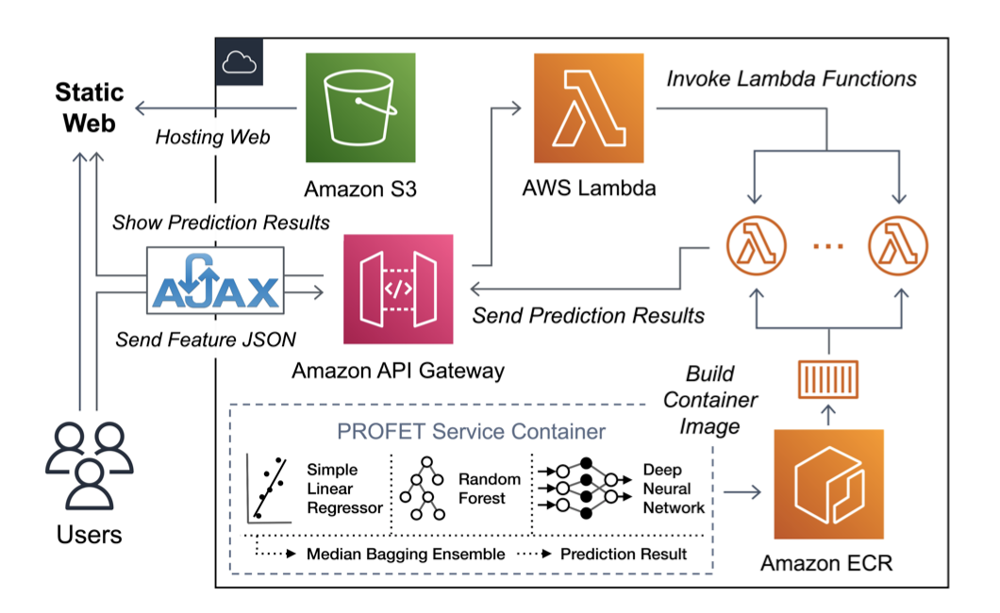

Documentation
Understand the PROFET architecture
- USER
A client that wants to estimate the training time of a custom CNN implementation runs the code on a given, randomly chosen anchor instance with profiling enabled and submits the profiled output to the predictive model in json format.
- PROFET SYSTEM
PROFET: PROFiling-based CNN Training Latency prohET for GPU Cloud Instances
Using profiling results that do not involve internal model architectures but contain high-level categorical latencies of different tasks, PROFET predicts training times for different cases, such as different instance types, batch sizes, and input image pixel sizes.
Feature Engineering with NLP clustering
Group similar operations to improve the prediction accuracy of models that use infrequently used operation names via the operation clustering module.
Anchor Instance Prediction & Input/Batch Size Prediction
As the first method in the latency prediction module, PROFET predicts the expected training time of a random model on the target instance based on the profiling results of the anchor instance. Another way to estimate PROFET uses the predicted latency on the target instance type to linearly predict training latency times for unique batch and input image pixel sizes on the target instance type. Unlike instance types, the impact of batch and input image pixel size changes can be expressed using the ratio of the numerical difference.
Try PROFET out for the first time
- Web Demo
PROFET Anchor Prediction
step 1. Select the achor instance to be profiled.
step 2. Upload the profiled result in json format.
step 3. Optionally enter the batch latency of the anchor instance.
If you enter batch latency of anchor instance as input, the result is derived using the median value of the three learning models used for final latency prediction. Conversely, if batch latency is not input, the latency prediction result is specified as the average value of the two learning models. Therefore, it is optional to proceed.
PROFET Scaler Prediction
Using two latency values, we can predict the latency of different batch sizes linearly.
step 1. Select the target instance for which you want results.
step 2. Choose one of batchsize and dataset size if you want to see latency results with different values.
step 3.
3-1 . Based on batchsize, latency at batch size 16 becomes the Latency Min value, and latency at batch size 256 becomes Latency Max.
3-2. Likewise, based on the dataset size , a dataset of 32 when the latency is Latency Min , Latency Max value is a value when 256 days dataset size.
- Docker
Run Docker
First, install the required docker and pull the image that matches the tensorflow version.
Run the tensorflow 2.5.0 docker using the pulled image.
sudo snap install docker sudo docker pull tensorflow/tensorflow:2.5.0 sudo docker run -it tensorflow/tensorflow:2.5.0 bashSetting
apt-get update apt-get install git -y cd home git clone https://github.com/anonymous-profet/profet.git cd profet pip install -r requirements.txtUpdate information about available packages and their versions through apt-get update.
And then , install git and move the path to home.
After git clone of PROFET, access the profet folder and install the necessary packages.
Data Preprocessing
cd data python anchor_preprocessing.pyFirst, execute anchor_preprocessing.py in the data folder to preprocess the data that matches the batch latency of the target instance to the profiling feature of the anchor instance. For detailed preprocessing method, refer to figure 6.
Profet Inference
In all processes suggested, the explanation specified in No.1 is for PROFET Anchor Prediction, and the process in No.2 is for PROFET Scaler Prediction.
cd ../profet # train python train_anchor_model.py --anchor_instance g3s.xlarge python train_scaler_model.py #inference python anchor_prediction.py --filename 'vgg16_224ds_16bs_test.json' --anchor_instance 'g3s.xlarge' --anchor_latency 333 python scaler_prediction.py --target_instance g3s.xlarge --latency_min 10 --latency_max 100 --size_pred 128 --batch_or_dataset batchsize- train
- Run train_anchor_model.py in the profet folder to train the model. At this time, enter anchor_instance as a parameter to specify which instance to learn based on.
- train_scaler_model.py also proceeds with the model training process.
- inference
- When executing anchor_prediction.py file , you can check the prediction result by entering filename , anchor instance , and anchor latency parameters.
( * Unlike the web demo when running anchor_prediction.py , input for anchor latency is a required parameter. )
After execution, the result is output as " anchor instance - target instance - predicted latency[ms] " .
- When running scaler_prediction.py, first input the target_instance type and determines whether to check the result when the batchsize changes or when the dataset changes as 'batch_or_dataset'.
2-1. If you want to check the result based on batchsize ,
'latency_min' as latency when batchsize is 16, and 'latency_max' as latency when batchsize is 64 .
And input the latency of the batchsize size you want to know as 'size_pred'.
2-2. If you want to check the result based on dataset size ,
'latency_min' as latency when dataset size is 32, and 'latency_max' as latency when dataset size is 256 .
And input the latency of the dataset size you want to know as 'size_pred'.
Finally you can see " Predicted_latency : ——" as a result.
- When executing anchor_prediction.py file , you can check the prediction result by entering filename , anchor instance , and anchor latency parameters.
Profet Validation
cd ../validation python anchor_validaiton.py --anchor_instance g3s.xlarge python train_scaler.py python scaler_validation.py --target_instance g3s.xlargeFinally, we proceed with validation.
- Go to validation folder and set anchor_instance parameter when running anchor_validation.py.
- Similarly, for scaler, scaler training is performed with train_scaler.py. And then, when running scaler_validation.py, target_instance is entered as a parameter to proceed.
As a result, the anchor instance to target instance result is specified and MAPE , R2 , and RMSE are output.
I explained how you can use PROFET like this. If you have any further questions, please ask through the Contact section!
- train